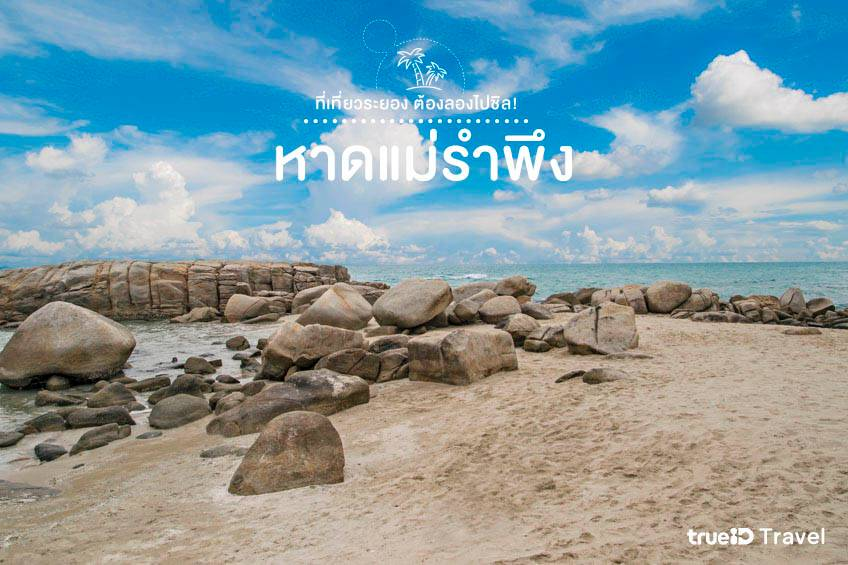

หาดแม่รำพึง
หาดแม่รำพึง หรือเรียกอีกชื่อว่า ก้นอ่าว คับ ที่นี่เป็นชายหาดอีกแห่งของระยองที่เป็นที่เที่ยวยอดฮิตคับ ด้วยน้ำทะเลสีคราม หาดทราย และมีร้านอาหารทะเลจำนวนมากตั้งเรียงรายอยู่หน้าหาด ทำให้เป็นที่เที่ยวที่คนนิยมมาเล่นน้ำ และหาอาหารทะเลอร่อยๆ ง่ายๆ ชิมกัน อีกทั้งยังมีที่พักติดทะเลสวยๆ ในบริเวณนี้ให้เลือกชิลอีกด้วย